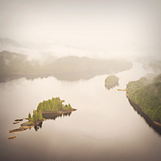

Puedes seguirnos en Twitter Paisajes fantasmales, bosques y pantanos dignos de un cuento de los hermanos Grimm, valles con “setas” gigantes, un cañón con un tesoro verde, desiertos donde las rocas [...]
Puedes seguirnos en Twitter
Paisajes fantasmales, bosques y pantanos dignos de un cuento de los hermanos Grimm, valles con “setas” gigantes, un cañón con un tesoro verde, desiertos donde las rocas amanecen en lugares diferentes, árboles milenarios o gigantes. Podría ser la lista de un plan de escenografía para una película de Tim Burton. Pero son sitios reales situados dentro de Estados Unidos, y que por alguna razón, parecen “encantados”, como sometidos a poderes mágicos o “hechizados”.
1. Un bosque “bajo un hechizo”.
Algun malévolo hechizo así lo quizo. Un bosque entre extrañas formaciones, con árboles muertos que parecen eternizarse en ese estado. Sólo quedan por aparecer fantasmas. Todo ello si quisiéramos dejar de creer que en Mammoth Hot Springs, no es la actividad geotérmica, sino las brujas, las responsables de tamaño espectáculo. Sólo queda que un film de Tim Burton encuentre su locación natural en éste sitio del Parque Nacional Yellowstone.
Jim Trodel
Bernt Rostad
Schmeeve
Turmanc
2. Y un bosque “hechizado por la lluvia”…
Habría que indagar, si el hechizo es sobre el aspecto del bosque, o si el aspecto del bosque es consecuencia del hechizo de la lluvia. Y es que alguna “maldición” ha caído sobre éste bosque, que soporta más de 4.000 milímetros anuales para desplegar su magia, en un aspecto también digno de un cuento de los hermanos Grimm. Altas coníferas decoradas por musgos, líquenes y hongos conforman un paisaje único conocido como Selva de Hoh.
BWP13
Minette Layne
Alex grande
Abhinaba Basu
Minette Layne
woodleywonderworks
John Walker
3. Cuando las setas se vuelven gigantes…
Había una vez un valle donde las setas tenían tamaños completamente inusuales, algo así como setas gigantes….Basta ya, de dejar volar la imaginación. No hay nada de setas ni de gigantes. Tan sólo son las clásicas formaciones de hoodoos, o chimeneas de hadas, tan “usuales” a la vuelta de la esquina como en el Valle de Goblin. Son de hecho, formaciones rocosas que parecen setas, y gigantes. Mejor dejamos en pie otras historias…
Jphilipg
Frank Kovalchek
vicki watkins
Bring Back Words

Julian Fong
4. Un cañón para buscar duendes
Había una vez….un lugar increíble que no podíamos encabezar en su descripción de otro modo. Como un cuento, o como un sitio de cuentos: un cañón oscuro y “tenebroso”, donde sin embargo, aflora la vida, como un auténtico jardín botánico escondido. Se llama garganta de Oneonta, un tramo del río Columbia en Oregon, Estados Unidos donde la flora crece con especies endémicas dignas de un coleccionistas.
Colby Oter
Jinho Jung
Robert Hamilton
Rachel Sandwik
5. …y en la serie de paisaje sacados de una película de Tim Burton…:
O mejor, otro paisaje digno de que Tim Burton afile sus lápices para desplegar un nuevo guión. Y es que tiene todos los ingredientes para una de sus historias en escenarios oscuros y hasta fantasmales: un pantano entre tinieblas, siluetas negras y contraluces. En uno de nuestros posts más recientes, descubríamos un pantano al sur de Estados Unidos que combina uno de los bosques de cipreses más grandes del mundo, con ciénagas y rincones laberínticos donde perderse y provocar la imaginación:
Charlie Llewellin
Charlie Lewellin

Sookie Stackhouse
Todd Dwyer
Billy Bob Bain
6. Un mundo muy muy lejano (y aislado)
Tal vez no haya tanto de sitio “encantado”. Lo que sobra en éste sitio es belleza. Preciosidad empalagosa que hasta se hace irreal. Se llama Monumento Nacional Misty Fiords, está en Alaska, y es un paraíso aislado por paredes de granito que dificultan el acceso. Valles, espejos de agua y bosques envueltos en la niebla, se hace literalmente de cuentos:
Matt
get directly down
Kimberly Vardeman

Colin Davis
get directly down
7. El valle donde las rocas se deslizan:
Y no por algún conjuro. En Death Valley, parte del desierto de Mojave en California, existe un valle inhóspito, con temperaturas infernales de día, y con rocas, que a merced del viento se deslizan por una superficie en la que dibujan largas huellas. Parece que las rocas, gustan amanecer en lugares diferentes:
Imagen NASA Goddard Photo and Video

mtsrs
sandy.redding
Arno Gourdol
8. La playa donde el mar pelea con el bosque.
En ésta costa, reinan las tormentas, y las batallas naturales entre las fuerzas del mar y las murallas del bosque. Un sitio que estremece por las huellas de batallas que casi nadie llega a presenciar (por lo inoportuno de encontrarse en el lugar en medio de la tormenta, no por otra razón). En el Parque Nacional Olympic, especialmente en las playas Ruby y Rialto, el mar y el viento hacen de las suyas, condenando al bosque literalmente a hacerse astillas. De allí al paisaje de cuentos, sólo hay un paso…
John Fowler
John Fowler (Ruby Beach)
ben wiseley (Ruby Beach)
jessicadally
Esther Lee (Second Beach)
Sarah and Jason (Rialto beach)
9. El bosque de los árboles superpoderosos.
En lugares casi imposibles (por la altura y lo inhóspitos) crecen los árboles más longevos y enrevesados del planeta. Caprichosos ancianos y testigos de milenios, crecen en California, Nevada y Utah. Apenas tienen hojas, y tal vez, hasta parezcan muertos. Se llaman pinos Bristlecone, y crecen a 3.000 msnm…..
Brian Schalcosky
clr_flickr
Bala Sivakumar
Dan Eckert

Brian Schalcosky
10. Y el auténtico bosque gigante de la Luna de Endor
Jugar entre ellos puede ser cosa de niños. Un bosque que ha perdido por completo el sentido de la escala. Un bosque que más que de cuento, puede ser de película. Elegido como locación para escenas de la Luna de Endor en la Guerra de las Galaxias, el Parque Nacional Humboldt Rewoods guarda a 100 de las 137 sequoias más altas de Estados Unidos.

hillary

redwoodcoaster

Scott Catron

Miguel Vieira
Y así termina nuestra lista…volvemos al mundo real